First Project
Onyeka Emmanuel and Jobin Joseph
3/5/2021
Dear CEO & CFO of Budweiser the purpose of this explanatory data analysis is to conduct analysis from multiple different angles, and make inferences based on the Beers and Breweries data sets that were provided. We hope that this will fuel data driven decisions on future beer launches and beers that might need to be refreshed.
Libraries Used
#Pull in libraries
library(tidyverse)## -- Attaching packages ------------------------------- tidyverse 1.3.0 --## v ggplot2 3.3.3 v purrr 0.3.4
## v tibble 3.0.4 v dplyr 1.0.2
## v tidyr 1.1.2 v stringr 1.4.0
## v readr 1.4.0 v forcats 0.5.0## -- Conflicts ---------------------------------- tidyverse_conflicts() --
## x dplyr::filter() masks stats::filter()
## x dplyr::lag() masks stats::lag()library(ggthemes)
library(naniar)
library(ggplot2)
library(maps)##
## Attaching package: 'maps'## The following object is masked from 'package:purrr':
##
## maplibrary(dplyr)
library(mapproj)
library(ggthemes)
library(dplyr)
library(tmap)## Warning: package 'tmap' was built under R version 4.0.4library(tmaptools)## Warning: package 'tmaptools' was built under R version 4.0.4library(ggrepel)## Warning: package 'ggrepel' was built under R version 4.0.4library(class)
library(caret)## Loading required package: lattice##
## Attaching package: 'caret'## The following object is masked from 'package:purrr':
##
## liftlibrary(e1071)Data Sets
#Bring in data sets
Beers = read.csv(file.choose(), header = T)
Breweries = read.csv(file.choose(), header = T)
#Verify data set
head(Beers)## Name Beer_ID ABV IBU Brewery_id
## 1 Pub Beer 1436 0.050 NA 409
## 2 Devil's Cup 2265 0.066 NA 178
## 3 Rise of the Phoenix 2264 0.071 NA 178
## 4 Sinister 2263 0.090 NA 178
## 5 Sex and Candy 2262 0.075 NA 178
## 6 Black Exodus 2261 0.077 NA 178
## Style Ounces
## 1 American Pale Lager 12
## 2 American Pale Ale (APA) 12
## 3 American IPA 12
## 4 American Double / Imperial IPA 12
## 5 American IPA 12
## 6 Oatmeal Stout 12head(Breweries)## Brew_ID Name City State
## 1 1 NorthGate Brewing Minneapolis MN
## 2 2 Against the Grain Brewery Louisville KY
## 3 3 Jack's Abby Craft Lagers Framingham MA
## 4 4 Mike Hess Brewing Company San Diego CA
## 5 5 Fort Point Beer Company San Francisco CA
## 6 6 COAST Brewing Company Charleston SCQUESTION 1 How many Breweries are present in each state?
Using the bar chart along with the heat map you can see and visualize the number of breweries per state. You can see that California and Colorado seem to have the most Breweries while states such as North Dakota and West Virginia have just one brewery.
#Check if any rows are missing the State in Breweries Data set
gg_miss_var(Breweries)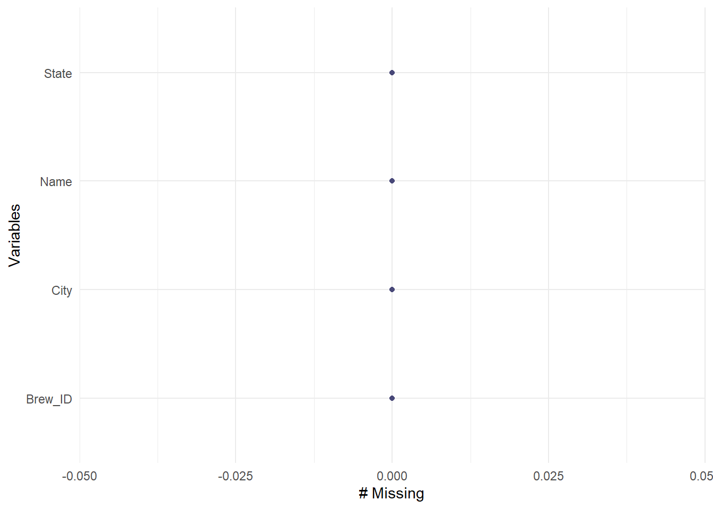
Breweriesperstate = count(Breweries, State) #Count the number of breweries per state
names(Breweriesperstate) = c('State', 'Number of Breweries') #Change the column names
Breweriesperstate$State = str_remove_all(Breweriesperstate$State, "\\s") #Remove white spaces
head(Breweriesperstate) #Verify data## State Number of Breweries
## 1 AK 7
## 2 AL 3
## 3 AR 2
## 4 AZ 11
## 5 CA 39
## 6 CO 47#Get a visual representation of Breweries per state
Breweriesperstate %>% filter(!is.na(State)) %>% ggplot(aes(State, `Number of Breweries`, fill = State)) +
geom_col(color = "black") + geom_text(aes(label = `Number of Breweries`), vjust = -0.5) +
labs(title = 'Number of Breweries Per State', x = 'State', y = 'Number of Breweries') +
theme_economist()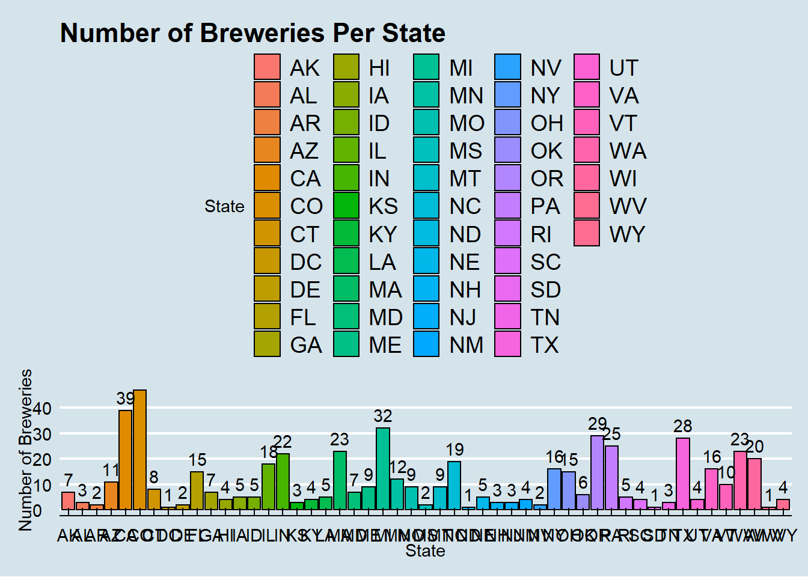
#USMap of Breweries in each state
country = data.frame(State = state.abb, region = state.name) #Pull in states data set
head(country) #Verify data set## State region
## 1 AL Alabama
## 2 AK Alaska
## 3 AZ Arizona
## 4 AR Arkansas
## 5 CA California
## 6 CO ColoradoBPSmergedcountry = merge(Breweriesperstate, country, 'State') #Merge to have the region
head(BPSmergedcountry) #Verify data set## State Number of Breweries region
## 1 AK 7 Alaska
## 2 AL 3 Alabama
## 3 AR 2 Arkansas
## 4 AZ 11 Arizona
## 5 CA 39 California
## 6 CO 47 Coloradostates = map_data('state') #Get the data with longitudes and latitudes
states$region = str_to_title(states$region) #Capitalize the first letter in the region
head(states) #Verify data set## long lat group order region subregion
## 1 -87.46201 30.38968 1 1 Alabama <NA>
## 2 -87.48493 30.37249 1 2 Alabama <NA>
## 3 -87.52503 30.37249 1 3 Alabama <NA>
## 4 -87.53076 30.33239 1 4 Alabama <NA>
## 5 -87.57087 30.32665 1 5 Alabama <NA>
## 6 -87.58806 30.32665 1 6 Alabama <NA>statescenter = data.frame(state.center, State = state.abb, state.region, state.name) #Get the states centers
head(statescenter) #Verify data set## x y State state.region state.name
## 1 -86.7509 32.5901 AL South Alabama
## 2 -127.2500 49.2500 AK West Alaska
## 3 -111.6250 34.2192 AZ West Arizona
## 4 -92.2992 34.7336 AR South Arkansas
## 5 -119.7730 36.5341 CA West California
## 6 -105.5130 38.6777 CO West ColoradoBPSmergedstatescenter = merge(BPSmergedcountry, statescenter, 'State') #Merge to have the state centers
head(BPSmergedstatescenter) #Verify data set## State Number of Breweries region x y state.region
## 1 AK 7 Alaska -127.2500 49.2500 West
## 2 AL 3 Alabama -86.7509 32.5901 South
## 3 AR 2 Arkansas -92.2992 34.7336 South
## 4 AZ 11 Arizona -111.6250 34.2192 West
## 5 CA 39 California -119.7730 36.5341 West
## 6 CO 47 Colorado -105.5130 38.6777 West
## state.name
## 1 Alaska
## 2 Alabama
## 3 Arkansas
## 4 Arizona
## 5 California
## 6 Coloradomap.df = merge(BPSmergedcountry, states, 'region') #Merge to have the longitude and latitudes on same data set
map.df <- map.df[order(map.df$order),] #Set the order for proper plotting
head(map.df) #Verify data set## region State Number of Breweries long lat group order
## 1 Alabama AL 3 -87.46201 30.38968 1 1
## 2 Alabama AL 3 -87.48493 30.37249 1 2
## 6 Alabama AL 3 -87.52503 30.37249 1 3
## 7 Alabama AL 3 -87.53076 30.33239 1 4
## 8 Alabama AL 3 -87.57087 30.32665 1 5
## 9 Alabama AL 3 -87.58806 30.32665 1 6
## subregion
## 1 <NA>
## 2 <NA>
## 6 <NA>
## 7 <NA>
## 8 <NA>
## 9 <NA>dim(map.df) #Verify dimensions for number of rows and columns## [1] 15527 8#Plot the map showing the number of breweries by state
map.df %>% ggplot(aes(x = long, y = lat, group = group)) + geom_polygon(aes(fill = `Number of Breweries`)) +
geom_path(color = "black") + scale_fill_gradientn(colours=rev(heat.colors(10)),na.value="grey90") +
ggtitle("Number of Breweries by State") + coord_map() + xlab("Longitude") + ylab("Latitude") +
with(BPSmergedstatescenter, annotate(geom = "text", x = x, y = y, label = state.name, size = 3)) +
theme_fivethirtyeight()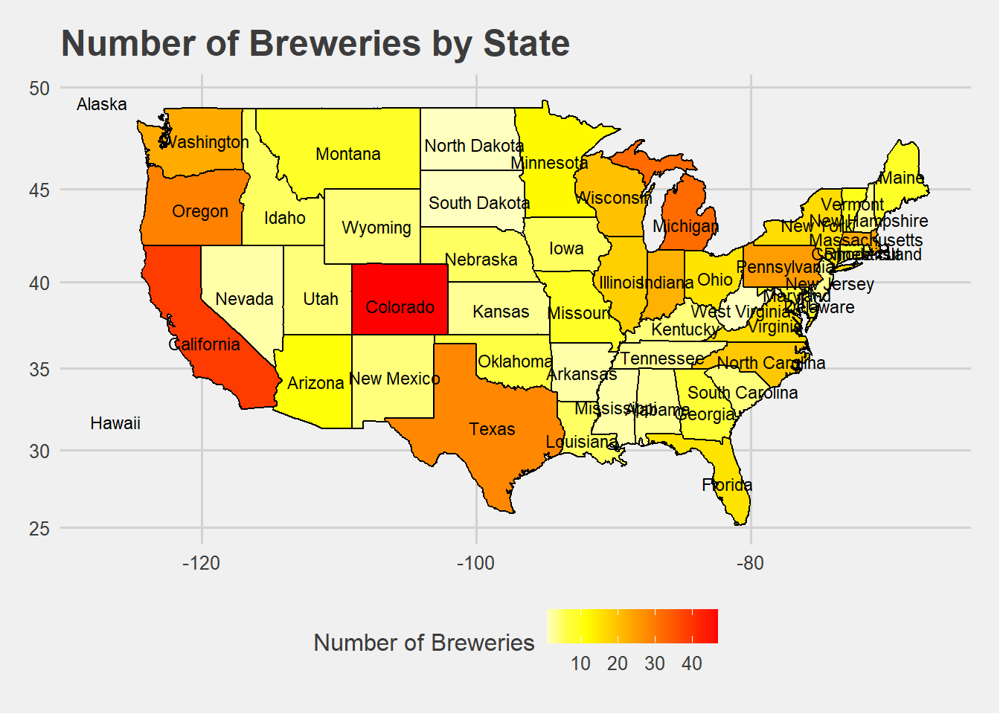
QUESTION 2 Merge beer data with the breweries data. Print the first 6 observations and the last six observations to check the merged file.
Using the head function, we were able to see the first 6 observations. We were also able to see the last 6 observation using the tail function.
#Merge Beers and Breweries datasets
BBmerged = merge(Beers, Breweries, by.x = c("Brewery_id"), by.y = c("Brew_ID"))
dim(Beers) #See number of rows in original dataset## [1] 2410 7dim(BBmerged) #Verify that the number of rows matches that in original dataset## [1] 2410 10#Rename column
BBmerged = BBmerged %>% rename(Beer_name = Name.x, Brewery_name = Name.y)
#Print first six
head(BBmerged)## Brewery_id Beer_name Beer_ID ABV IBU
## 1 1 Get Together 2692 0.045 50
## 2 1 Maggie's Leap 2691 0.049 26
## 3 1 Wall's End 2690 0.048 19
## 4 1 Pumpion 2689 0.060 38
## 5 1 Stronghold 2688 0.060 25
## 6 1 Parapet ESB 2687 0.056 47
## Style Ounces Brewery_name
## 1 American IPA 16 NorthGate Brewing
## 2 Milk / Sweet Stout 16 NorthGate Brewing
## 3 English Brown Ale 16 NorthGate Brewing
## 4 Pumpkin Ale 16 NorthGate Brewing
## 5 American Porter 16 NorthGate Brewing
## 6 Extra Special / Strong Bitter (ESB) 16 NorthGate Brewing
## City State
## 1 Minneapolis MN
## 2 Minneapolis MN
## 3 Minneapolis MN
## 4 Minneapolis MN
## 5 Minneapolis MN
## 6 Minneapolis MN#Print the last six
tail(BBmerged)## Brewery_id Beer_name Beer_ID ABV IBU
## 2405 556 Pilsner Ukiah 98 0.055 NA
## 2406 557 Heinnieweisse Weissebier 52 0.049 NA
## 2407 557 Snapperhead IPA 51 0.068 NA
## 2408 557 Moo Thunder Stout 50 0.049 NA
## 2409 557 Porkslap Pale Ale 49 0.043 NA
## 2410 558 Urban Wilderness Pale Ale 30 0.049 NA
## Style Ounces Brewery_name
## 2405 German Pilsener 12 Ukiah Brewing Company
## 2406 Hefeweizen 12 Butternuts Beer and Ale
## 2407 American IPA 12 Butternuts Beer and Ale
## 2408 Milk / Sweet Stout 12 Butternuts Beer and Ale
## 2409 American Pale Ale (APA) 12 Butternuts Beer and Ale
## 2410 English Pale Ale 12 Sleeping Lady Brewing Company
## City State
## 2405 Ukiah CA
## 2406 Garrattsville NY
## 2407 Garrattsville NY
## 2408 Garrattsville NY
## 2409 Garrattsville NY
## 2410 Anchorage AK#Check for missing values
gg_miss_var(BBmerged)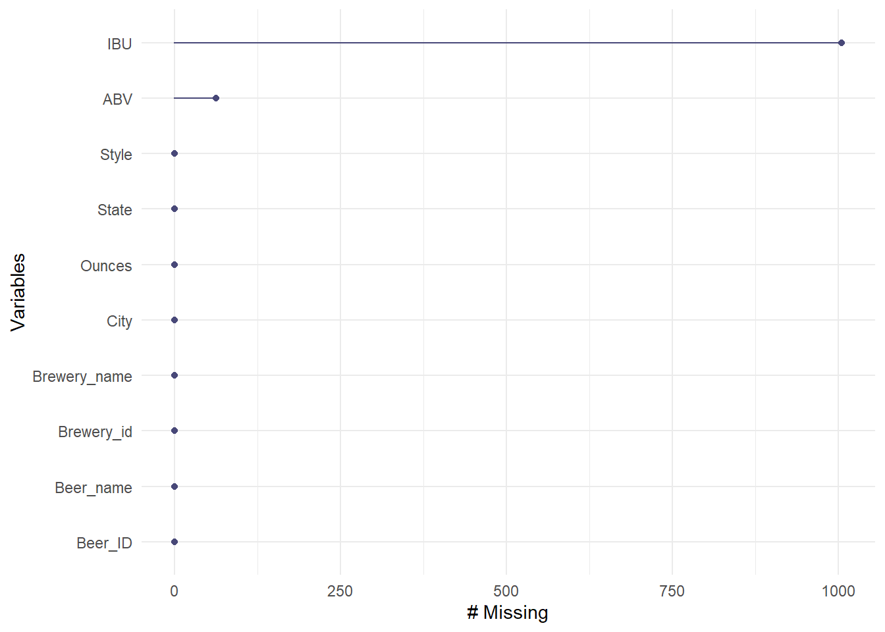
QUESTION 3 Address the missing values in each column.
We tidied the data by removing the NULL values.
#Remove missing values
gg_miss_var(BBmerged) #check for missing valuesBBmergedclean = na.omit(BBmerged) #Removing missing values from data set
gg_miss_var(BBmergedclean) #Recheck for missing values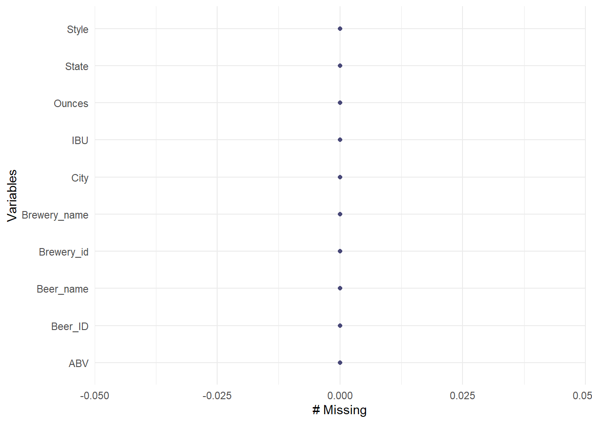
QUESTION 4 Compute the median alcohol content and international bitterness unit for each state. Plot a bar chart to compare.
Looking at the bar charts it seems like Maine has the highest median ABV and IBU. We can draw more inferences by studying the bar plot.
#Median ABV and IBU per state
medABV_IBUperstate = BBmergedclean %>% group_by(State) %>%
summarise(MedianABV = median(ABV), MedianIBU = median(IBU)) #Get the Median ABV and IBU per state## `summarise()` ungrouping output (override with `.groups` argument)medABV_IBUperstate## # A tibble: 50 x 3
## State MedianABV MedianIBU
## <chr> <dbl> <dbl>
## 1 " AK" 0.057 46
## 2 " AL" 0.06 43
## 3 " AR" 0.04 39
## 4 " AZ" 0.0575 20.5
## 5 " CA" 0.058 42
## 6 " CO" 0.065 40
## 7 " CT" 0.061 29
## 8 " DC" 0.059 47.5
## 9 " DE" 0.055 52
## 10 " FL" 0.062 55
## # ... with 40 more rows#Barplot of median ABV per state
medABV_IBUperstate %>% ggplot(aes(State, MedianABV)) + geom_col(color = "blue") +
labs(y = "Median ABV", title = "Median Alcohol by Volume per State") +
geom_text(aes(label = MedianABV), color = "blue", vjust = -0.5) + theme_fivethirtyeight()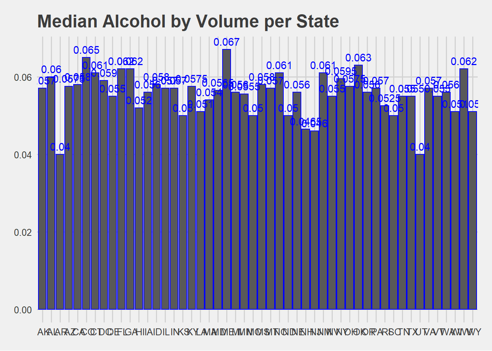
#Barplot of median IBU per state
medABV_IBUperstate %>% ggplot(aes(State, MedianIBU)) + geom_col(color = "red") +
labs(y = "Median IBU", title = "Median International Bitter Unit per State") +
geom_text(aes(label = MedianIBU), color = "red", vjust = -0.5) + theme_economist()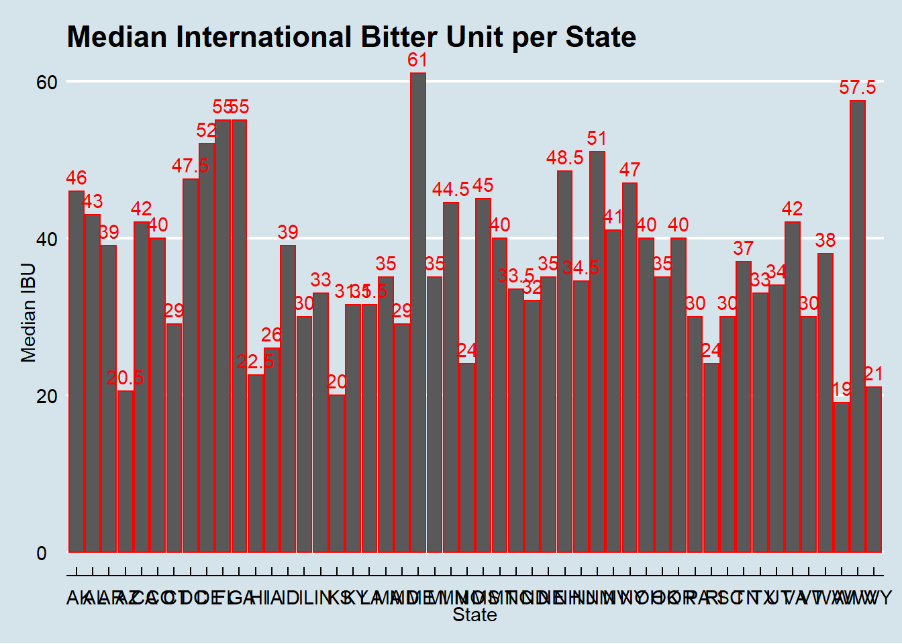
QUESTION 5 Which state has the maximum alcoholic (ABV) beer? Which state has the most bitter (IBU) beer?
Using the original data set we found that the state with the highest Alcoholic Beverage by Volume (ABV) beer is Colorado. The beer is called Lee Hill Series Vol. 5 - Belgian Style Quadrupel Ale having a ABV of 0.128. We also found that the state with the highest International Bitterness Unit (IBU) beer is Oregon. The beer is called Bitter Bitch Imperial IPA and has an IBU of 138.
#State with maximum ABV
Beersabvclean = BBmerged %>% drop_na(ABV) #Remove missing ABV values
gg_miss_var(Beersabvclean) #Verify that there are no missing ABV values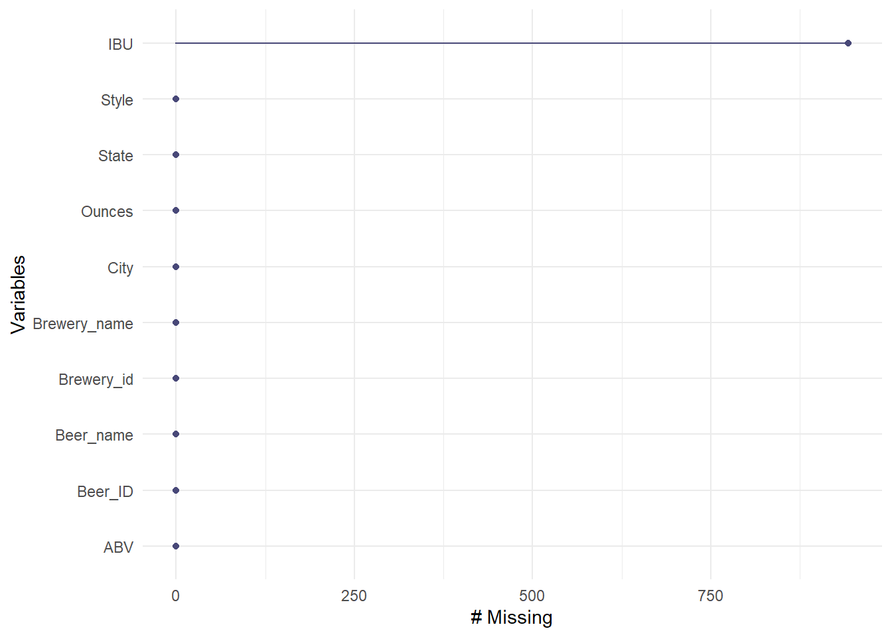
Beersabvclean[Beersabvclean$ABV == max(Beersabvclean$ABV),] #See state with max ABV## Brewery_id Beer_name
## 369 52 Lee Hill Series Vol. 5 - Belgian Style Quadrupel Ale
## Beer_ID ABV IBU Style Ounces Brewery_name
## 369 2565 0.128 NA Quadrupel (Quad) 19.2 Upslope Brewing Company
## City State
## 369 Boulder CO#State with maximum IBU
Beersibuclean = BBmerged %>% drop_na(IBU) #Remove missing IBU values
gg_miss_var(Beersibuclean) #Verify that there are no missing IBU values
Beersibuclean[Beersibuclean$IBU == max(Beersibuclean$IBU),] #See state with max IBU## Brewery_id Beer_name Beer_ID ABV IBU
## 1134 375 Bitter Bitch Imperial IPA 980 0.082 138
## Style Ounces Brewery_name
## 1134 American Double / Imperial IPA 12 Astoria Brewing Company
## City State
## 1134 Astoria ORQUESTION 6 Comment on the summary statistics and distribution of the ABV variable.
We can see from the data that the median of the ABV in beers in the US is around 0.056 and the minimum is 0.001 and the maximum is around 0.128. Looking at the box plot we can see that it is normally distributed.
#See summary statistics of ABV
summary(BBmerged$ABV)## Min. 1st Qu. Median Mean 3rd Qu. Max. NA's
## 0.00100 0.05000 0.05600 0.05977 0.06700 0.12800 62#See distribution of ABV
BBmerged %>% ggplot(aes(y = ABV)) + geom_boxplot() +
labs(title = "Alcohol by Volume Distribution")## Warning: Removed 62 rows containing non-finite values (stat_boxplot).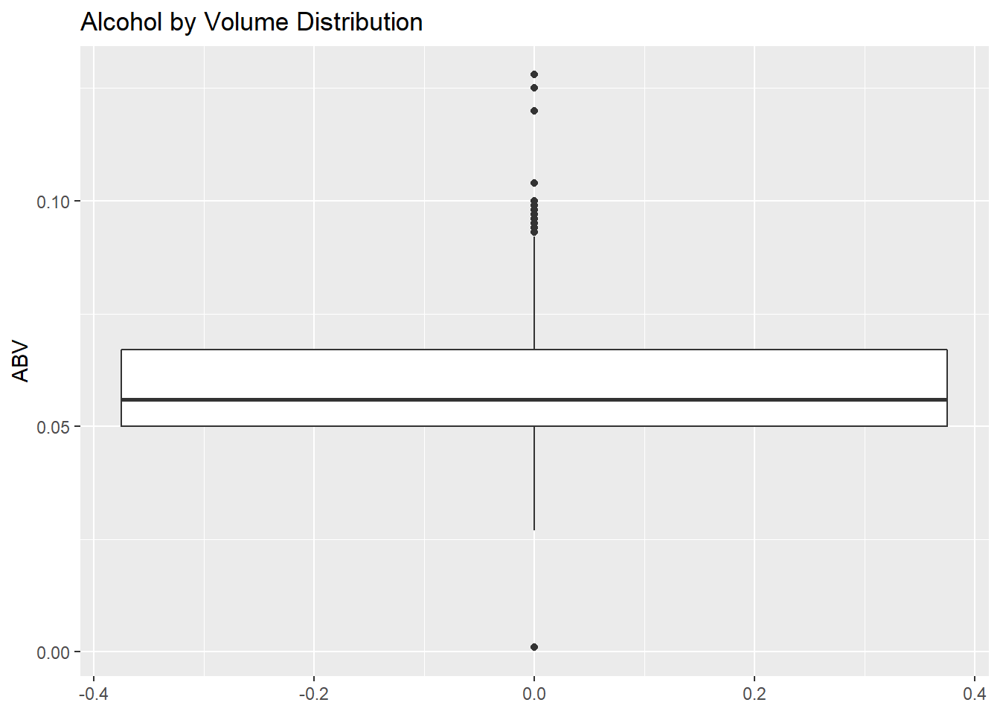
QUESTION 7 Is there an apparent relationship between the bitterness of the beer and its alcoholic content? Draw a scatter plot. Make your best judgment of a relationship and EXPLAIN your answer.
There is a positive correlation between IBU and ABV. The correlation is strongest between the two when ABV is between 0.05 and 0.075.
#Scatter plot of relationship between ABV and IBU
BBmergedclean %>% ggplot(aes(ABV, IBU)) + geom_point() + geom_smooth() + ggtitle("Beer IBU vs ABV")## `geom_smooth()` using method = 'gam' and formula 'y ~ s(x, bs = "cs")'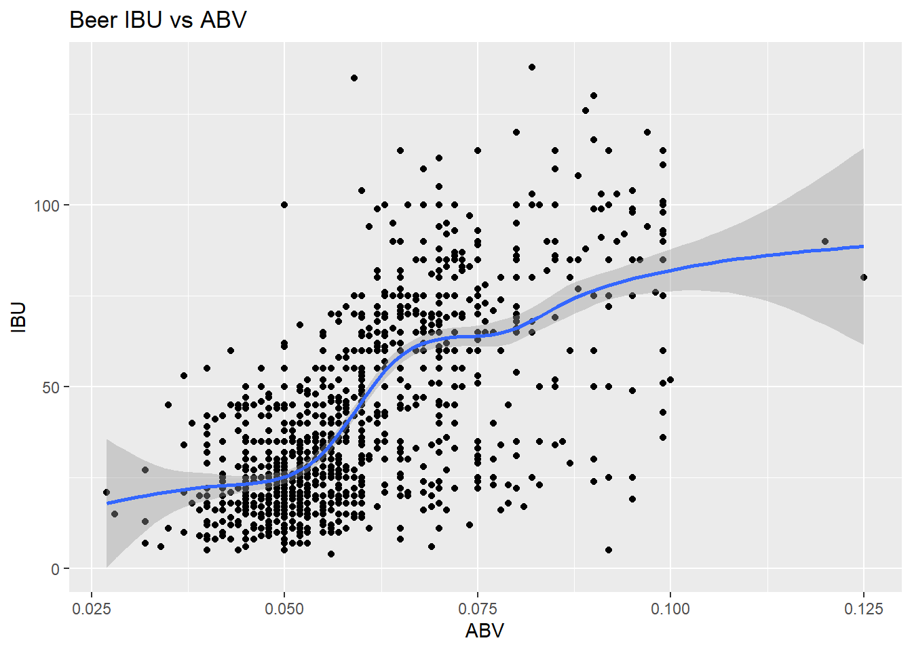
QUESTION 8 Investigate the difference with respect to IBU and ABV between IPAs (India Pale Ales) and other types of Ale (any beer with “Ale” in its name other than IPA). Use KNN classification to investigate this relationship. Provide statistical evidence one way or the other.
Using the KNN classifier model we are able to predict whether a beer is a IPA or other Ale with 88.7% accuracy.We can see a relationship between IPA and other ales.
BBipa = BBmergedclean %>% filter(str_detect(Style, regex("(IPA)", ignore_case = F))) #Create data set with just IPA
head(BBipa) #Verify data set## Brewery_id Beer_name Beer_ID ABV IBU
## 1 1 Get Together 2692 0.045 50
## 2 2 Citra Ass Down 2686 0.080 68
## 3 2 Rico Sauvin 2678 0.076 68
## 4 2 Pile of Face 2675 0.060 65
## 5 4 Habitus (2014) 2668 0.080 100
## 6 4 Solis 2667 0.075 85
## Style Ounces Brewery_name
## 1 American IPA 16 NorthGate Brewing
## 2 American Double / Imperial IPA 16 Against the Grain Brewery
## 3 American Double / Imperial IPA 16 Against the Grain Brewery
## 4 American IPA 16 Against the Grain Brewery
## 5 American Double / Imperial IPA 16 Mike Hess Brewing Company
## 6 American IPA 16 Mike Hess Brewing Company
## City State
## 1 Minneapolis MN
## 2 Louisville KY
## 3 Louisville KY
## 4 Louisville KY
## 5 San Diego CA
## 6 San Diego CABBale = BBmergedclean %>% filter(str_detect(Style, regex("(Ale)", ignore_case = F))) #Create data set with jus Ale
head(BBale) #Verify data set## Brewery_id Beer_name Beer_ID ABV IBU Style
## 1 1 Wall's End 2690 0.048 19 English Brown Ale
## 2 1 Pumpion 2689 0.060 38 Pumpkin Ale
## 3 2 A Beer 2683 0.042 42 American Pale Ale (APA)
## 4 2 Flesh Gourd'n 2681 0.066 21 Pumpkin Ale
## 5 2 Sho'nuff 2680 0.040 13 Belgian Pale Ale
## 6 2 Coq de la Marche 2677 0.051 38 Saison / Farmhouse Ale
## Ounces Brewery_name City State
## 1 16 NorthGate Brewing Minneapolis MN
## 2 16 NorthGate Brewing Minneapolis MN
## 3 16 Against the Grain Brewery Louisville KY
## 4 16 Against the Grain Brewery Louisville KY
## 5 16 Against the Grain Brewery Louisville KY
## 6 16 Against the Grain Brewery Louisville KYBBipa$Classifier = c('IPA') #Create column classifying everything as IPA
BBale$Classifier = c('Ale') #Create a column classifying everything as Ale
bbipa_ale = merge(BBipa, BBale, all = T) #Merge both data sets
head(bbipa_ale) #Veryfy data set ## Brewery_id Beer_name Beer_ID ABV IBU
## 1 1 Get Together 2692 0.045 50
## 2 1 Pumpion 2689 0.060 38
## 3 1 Wall's End 2690 0.048 19
## 4 2 A Beer 2683 0.042 42
## 5 2 Citra Ass Down 2686 0.080 68
## 6 2 Coq de la Marche 2677 0.051 38
## Style Ounces Brewery_name
## 1 American IPA 16 NorthGate Brewing
## 2 Pumpkin Ale 16 NorthGate Brewing
## 3 English Brown Ale 16 NorthGate Brewing
## 4 American Pale Ale (APA) 16 Against the Grain Brewery
## 5 American Double / Imperial IPA 16 Against the Grain Brewery
## 6 Saison / Farmhouse Ale 16 Against the Grain Brewery
## City State Classifier
## 1 Minneapolis MN IPA
## 2 Minneapolis MN Ale
## 3 Minneapolis MN Ale
## 4 Louisville KY Ale
## 5 Louisville KY IPA
## 6 Louisville KY Ale#Average KNN to find the best K
splitPerc = .75
iterations = 500
numks = 30
masterAcc = matrix(nrow = iterations, ncol = numks)
for(j in 1:iterations)
{
accs = data.frame(accuracy = numeric(30), k = numeric(30))
trainIndices = sample(1:dim(bbipa_ale)[1],round(splitPerc * dim(bbipa_ale)[1]))
train = bbipa_ale[trainIndices,]
test = bbipa_ale[-trainIndices,]
for(i in 1:numks)
{
classifications = knn(train[,c(4,5)],test[,c(4,5)],train$Classifier, prob = TRUE, k = i)
table(classifications,test$Classifier)
CM = confusionMatrix(table(classifications,test$Classifier))
masterAcc[j,i] = CM$overall[1]
}
}
MeanAcc = colMeans(masterAcc)
plot(seq(1,numks,1),MeanAcc, type = "l")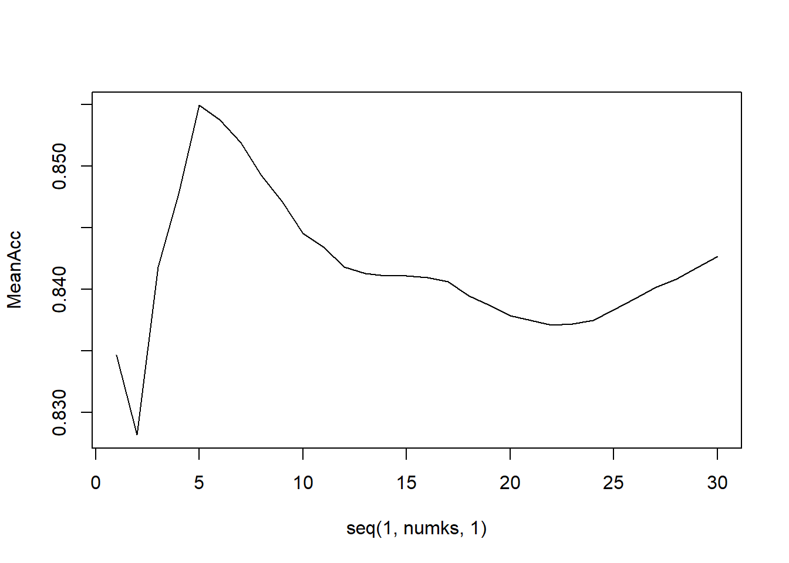
#See Confusion Matrix
classifications = knn(train[,c(4,5)],test[,c(4,5)],train$Classifier, prob = TRUE, k = 5)
table(classifications,test$Classifier)##
## classifications Ale IPA
## Ale 112 16
## IPA 18 92CM = confusionMatrix(table(classifications,test$Classifier))
CM## Confusion Matrix and Statistics
##
##
## classifications Ale IPA
## Ale 112 16
## IPA 18 92
##
## Accuracy : 0.8571
## 95% CI : (0.8061, 0.899)
## No Information Rate : 0.5462
## P-Value [Acc > NIR] : <2e-16
##
## Kappa : 0.7123
##
## Mcnemar's Test P-Value : 0.8638
##
## Sensitivity : 0.8615
## Specificity : 0.8519
## Pos Pred Value : 0.8750
## Neg Pred Value : 0.8364
## Prevalence : 0.5462
## Detection Rate : 0.4706
## Detection Prevalence : 0.5378
## Balanced Accuracy : 0.8567
##
## 'Positive' Class : Ale
## QUESTION 9 Find one other useful inference from the data that you feel Budweiser may be able to find value in. You must convince them why it is important and back up your conviction with appropriate statistical evidence.
We grouped each beer in to five categories based on their ounces for further analysis and plotted a bar chart. Looking at the bar chart we can see that the most common beer bottle size in most states is the Stubby which ranges from 11 to 12 ounces. Some states such as Indiana and Michigan seem to have more of the Long Neck/Heritage beer size which ranges from 12 to 22 ounces. In every state the least available beer bottle size seemed to be the Bomber which ranges from 22 to 32 ounces. This information can help guide future beer launches and what sizes to prioritize in what locations.
#Create new categorical column for bottle sizes
BBmerged = BBmerged %>% mutate(Use = cut(Ounces, breaks = c(8,11,12,22,32,63),
labels = c("Can", "Stubby", "Long Neck/Heritage", "Bomber", "Mini-Growler")))
BBmerged = BBmerged %>% rename(Size = Use) #Rename Column
#Bar chart of Bottle sizes by state
BBmerged %>% ggplot(aes(State, fill = Size)) + geom_bar() +
labs(title = "Bottle Sizes by State", x = "State", y = "Bottle Size") + theme_economist()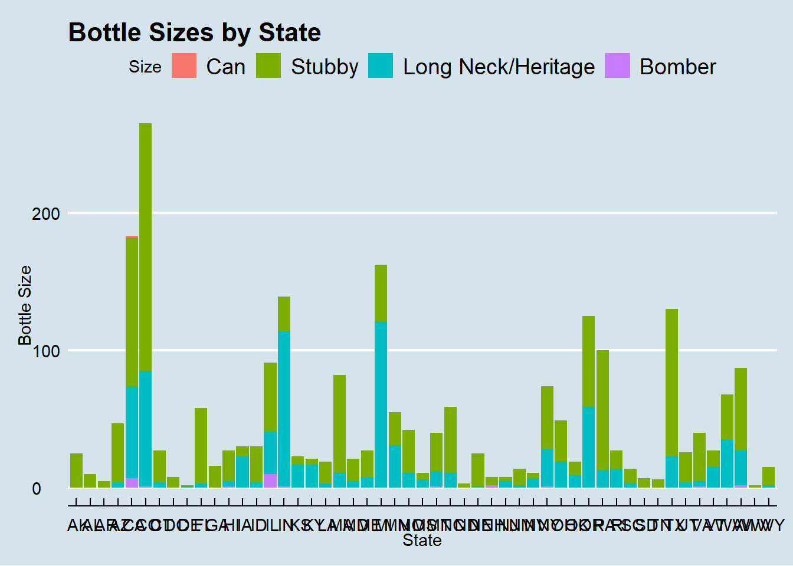